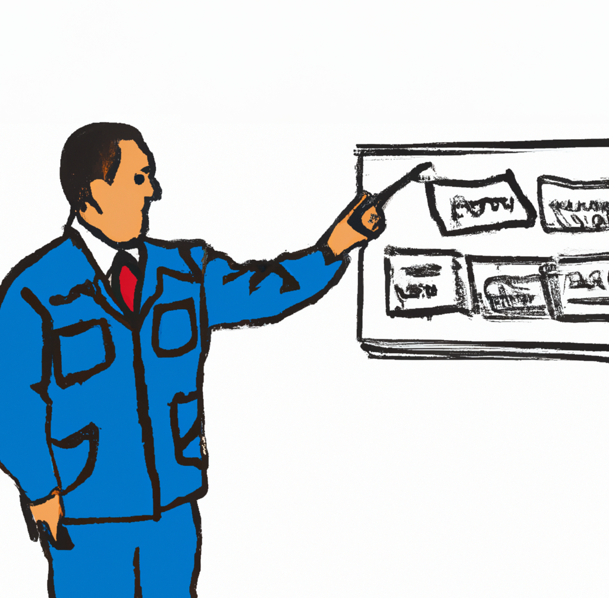
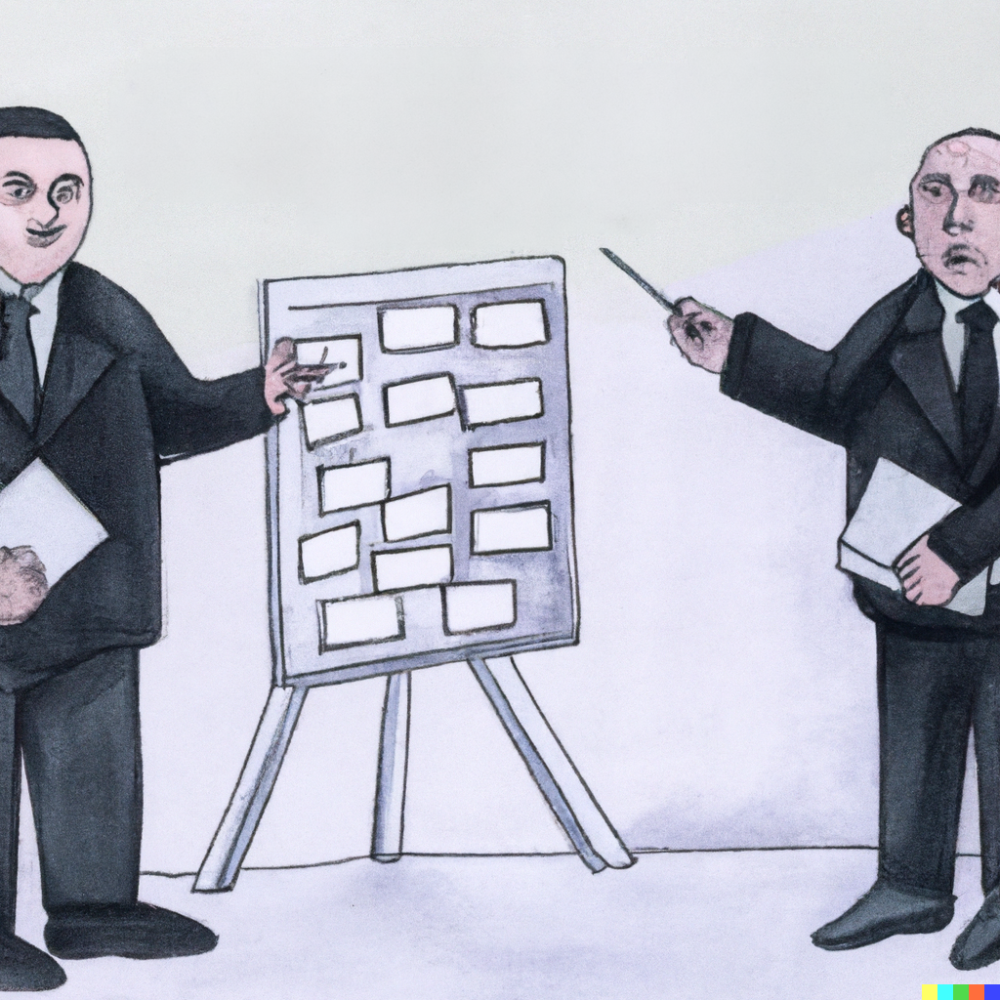
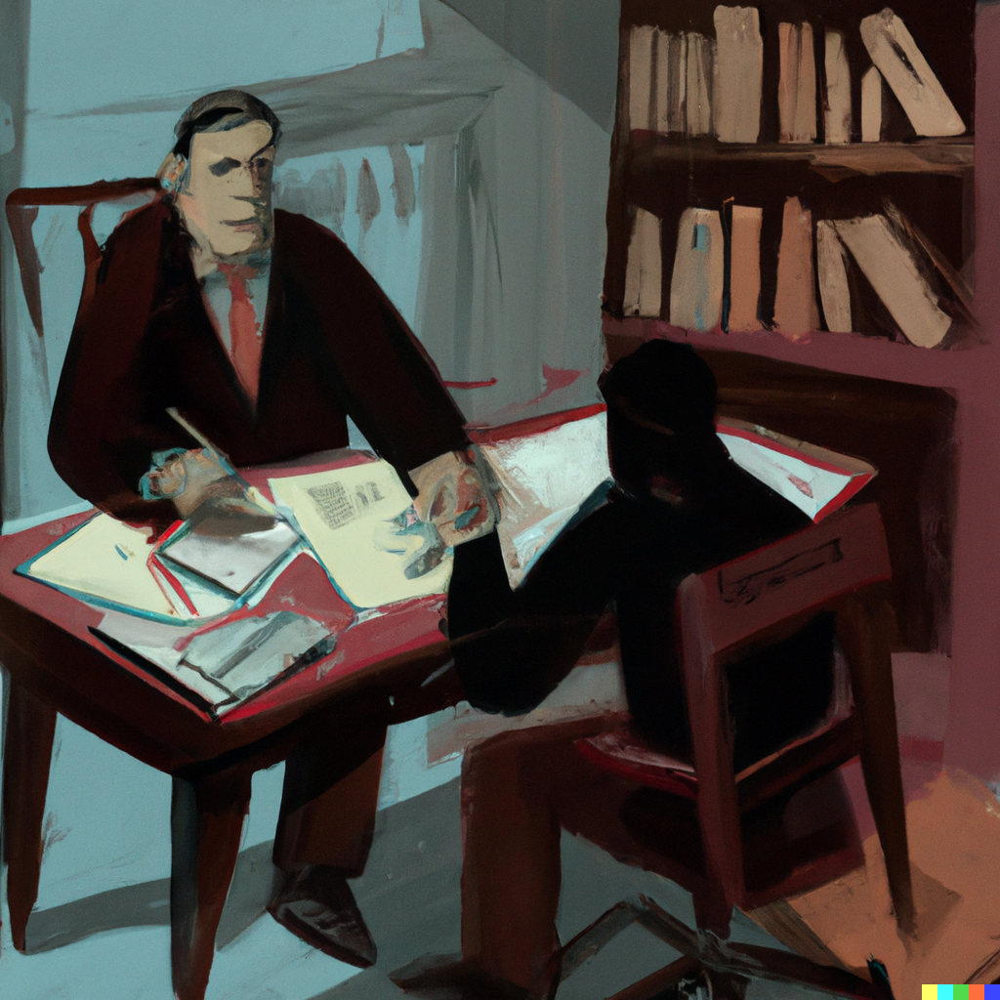

Criminology in crisis? Replication & reproducibility in criminology (Undergraduate-level)

In the Spring of 2022, the semester after teaching our graduate-level “Replication and Reproducibility” course, Jake was asked to teach a Senior Seminar (UNCW’s capstone course for criminology majors). He decided it would be a good opportunity to see if he could revise the course for senior-level criminology majors. Take a look at the syllabus to see how he changed the reading schedule for undergraduates. In terms of the assignments, there are two primary changes. First, he split the assignments into seven smaller chunks, including a specific assignment on creating a reproducible file structure (for which he borrowed heavily from Danielle Navarro’s “Project Structure” videos). Second, for “Replication and Reproducibility” project, he required everyone to reproduce or conceptually replicate an article using the at least one of the first seven waves of the National Youth Survey (NYS) data available on ICPSR.
We have included these assignments as they were assigned in Jake’s class with light editing, where necessary, for student privacy reasons. In a forthcoming blog post we will discuss what we learned from designing this course and note what we would change going forward. Jake is scheduled to teach the course again in the Fall 2023 semester, so he will have the opportunity to implement these changes.
R Assignments

R Assignment 1: Getting Started in R
The purpose of this first assignment is to demonstrate that you have downloaded the “R” statistical program and the “RStudio” Integrated Development Environment (IDE).
R Assignment 2: Introduction to R Markdown
The purpose of this second assignment is to introduce you to working in RMarkdown. This will be the primary file format in which you will save and present your work for this class.

R Assignment 3: Data Visualization
The purpose of this assignment is to introduce you to the powerful data visualization functionality in R and specifically the data visualization capabilities of the package “ggplot2”.
R Assignment 4: Reproducible File Structure
Creating a reproducible file structure is important for efficiently working with and sharing your research and data. When you have a reproducible file structure, it will be easier for you to come back to a project after weeks or months of not working on it and pick up where you left off. Also, it will be easier for others to work directly with you, reproduce your work, and/or expand upon your work.

R Assignment 5: Downloading & Describing Data
The purpose of this assignment is to learn how to download and provide basic descriptions of data and specific variables analyzed in a published study.
 “Illustrations from the Openscapes blog Tidy Data for reproducibility, efficiency, and collaboration by Julia Lowndes and Allison Horst”
“Illustrations from the Openscapes blog Tidy Data for reproducibility, efficiency, and collaboration by Julia Lowndes and Allison Horst”
R Assignment 6: Data Wrangling
The purpose of this assignment is to learn how to wrangle data in order to reproduce results from a published study (specifically figures 2-4 in Warr, 1993).

R Assignment 7: Building Publishable Tables Data
The main purpose of this assignment is to teach you how to create publishable-ready tables entirely within the R ecosystem.
Reproducibility Project
Project Phase 1: Review NYS Data and Develop Research Topics/Questions
The primary purpose of this first project assignment is to familiarize yourself with the National Youth Survey (NYS) and begin to develop some ideas for research topics or questions that you will eventually examine with a replication study.
Project Phase 2: Identify Published Research on Topic/Question
The primary purpose of Phase 2 of the Replication and Reproducibility Project are to expose you to the academic literature surrounding your research topic and/or question. A secondary purpose of this assignment is for you to develop a sense of how (un)common it is to find research articles in the top journals in the field of Criminology for which the authors have openly shared their data and code for reproducibility purposes.

Project Phase 3: Describe & Justify Reproduction or Conceptual Replication
Unlike your previous assignments, this assignment will not be as explicitly directed or organized as previous assignments. While I will provide you with basic guidelines and things to include, this is your chance to demonstrate your own creativity and show what you have learned by crafting your own RMD file as you see fit. The final knitted file should contain the following parts: 1) Describe Article and Specific Findigs; 2) Insert Image and Description of Key Table(s) and/or Figure(s); and 3) Write Conclusion and Submit Knitted File and File Structure.

Project Phase 4: Identify & Describe Key Variables
For this assignment, you will begin the actual reproduction or replication by identifying and providing descriptive statistics for the key variables that will make up your analysis.

Project Phase 5: First Draft of Replication & Reproducibility Project
In this phase, you will complete a rough draft of your replication and reproducibility project.You have already drafted some of the following parts of this assignment in previous Project Assignments (e.g. Project Assignments #3 and #4). However, you should add and expand on those parts where appropriate (e.g., description of article, data source, and findings, and justification of replication or reproduction).
Project Phase 6: Peer Review
Peer reviewers are responsible for providing detailed and constructive feedback (i.e., not just “good job!” – there are always ways we can improve our work) using a helpful and professional tone. In conducting your peer review, think about the steps you have taken so far and assess the things you have learned.

Project Phase 7: Final Replication & Reproducibility Project
Based on feedback from your peer reviewer and instructor, submit a revised version of your replication and reproducibility project. This final version should be as polished as possible (e.g., free of grammatical, spelling, and coding errors). The computational goal is for your work to be completely reproducible (e.g., “one-click reproducibility”) while the substantive goal should be to write a well-organized, thorough, and thoughtful “article” or detailed “blog entry” replicating or reproducing an existing study.
Reuse
Citation
@online{day and jon brauer,
author = {Day and Jon Brauer, Jake},
title = {Criminology in Crisis? {Replication} \& Reproducibility in
Criminology {(Undergraduate-level)}},
url = {https://www.reluctantcriminologists.com/course-materials/3_ugrad_RnR},
langid = {en}
}